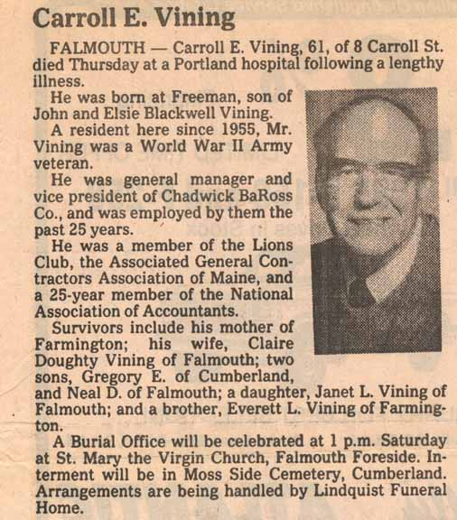
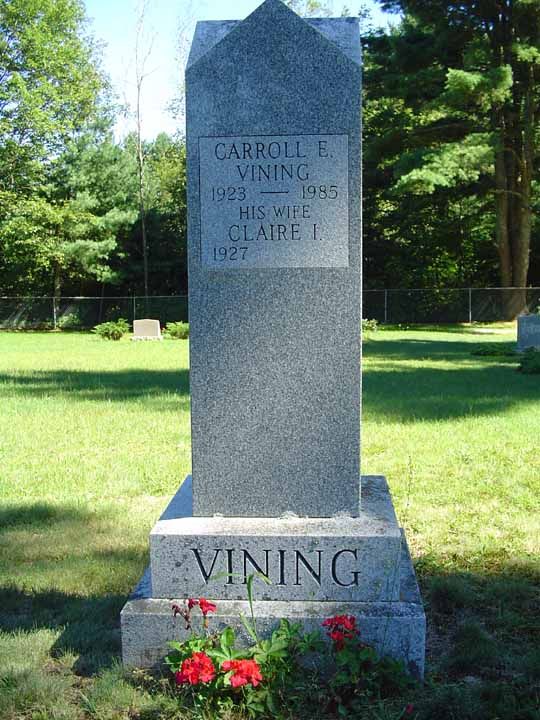
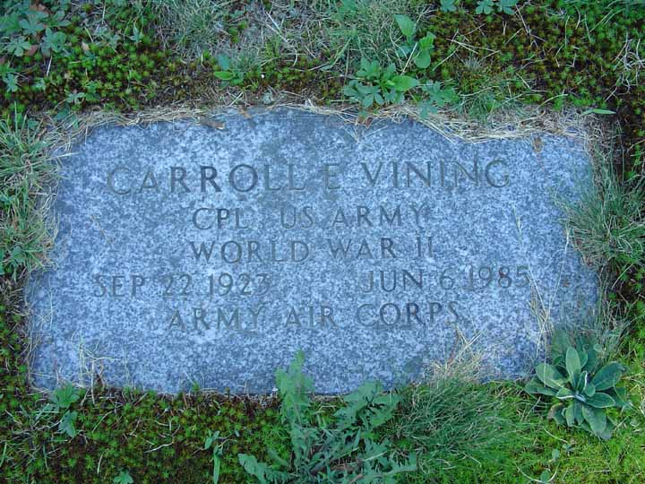
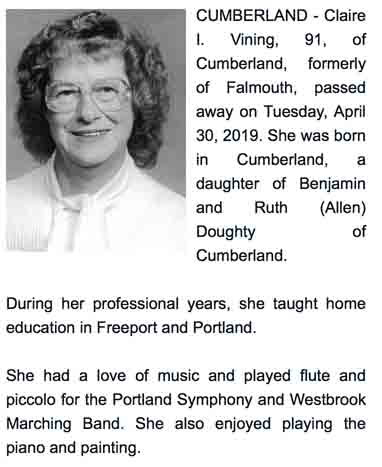
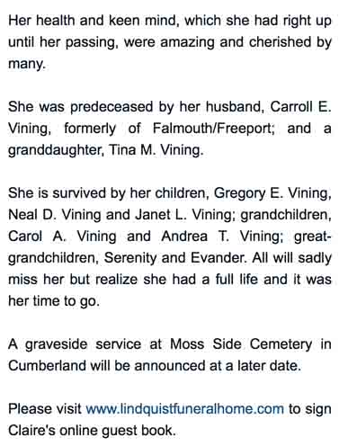

Death Data
Obituary (likely from the Portland [Maine] Press Herald) for Carroll Edward Vining. Following the obituary are pictures of the headstone for Carroll Edward Vining and Claire Isabel Doughty and the military gravestone of Carroll Edward Vining. These stones are in the Moss Side Cemetery in Cumberland, Cumberland County, Maine.



